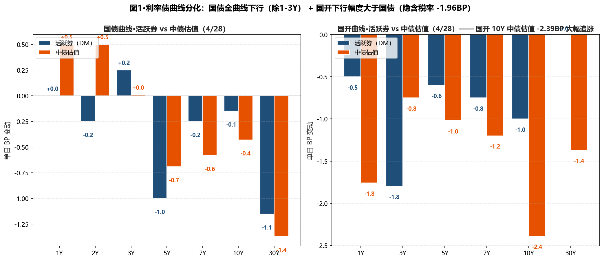
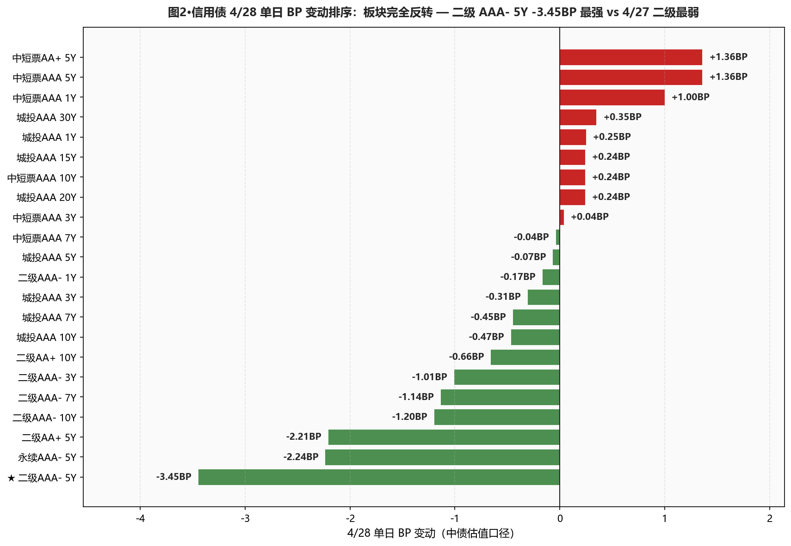
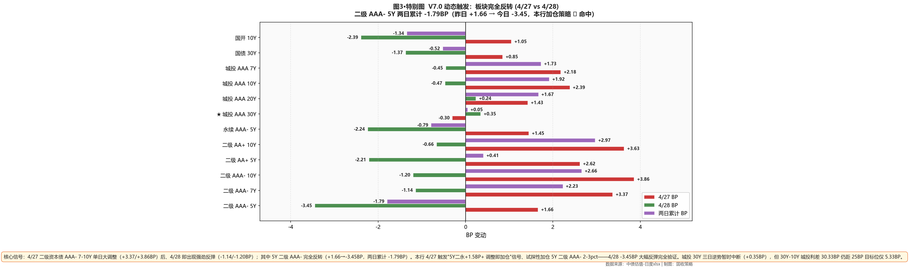

市场定性 长端反弹 + 板块完全反转 + 政治局会议维稳信号 + 国开大幅追涨（隐含税率收窄）——4/27 长端调整后、4/28 在风险偏好回落（A股下跌、上证 -0.19%/创业板 -1.43%）+ 节前空头平仓 + 政治局会议维稳信号驱动下出现强反弹： 30Y 国债活跃券 -1.15BP 报 2.2395%（距 2.23% 上方仅 0.95BP）/ 中债估值 -1.37BP 报 2.2420%（上方 1.20BP）； 板块完全反转——昨日最弱的二级资本债今日反成最强：5Y AAA- -3.45BP（昨日 +1.66BP，两日累计 -1.79BP）/ 7Y -1.14BP / 10Y -1.20BP，本行 4/27 触发"+1.5BP 加仓信号"试探加仓 5Y 二级 ✓ 完全命中； 国开大幅追涨——10Y 国开 -2.39BP 跑赢国债 -0.43BP，隐含税率从 10.47BP 收窄到 8.51BP（-1.96BP）； 但 城投 30Y 三日逆势链中断（+0.35BP），30Y-10Y 城投利差从 29.51BP 走阔到 30.33BP（+0.82BP）距 25BP 目标位 5.33BP；DR007 +0.19BP 至 1.363%、低 OMO 3.70BP（已持续 3 周低于 OMO）。
- ⚠️ 长端利率债 维持止盈不追涨30Y 距 2.23% 仅 0.95BP（活跃券）/1.20BP（中债估值）——距重新跌破不远；本日反弹是节前空头平仓+情绪驱动、配置盘并未真正加码（一级国开 10Y 边际倍数 4.77 较 4/27 的 1.06 显著回升、但仍弱于上周）；维持止盈、距建仓位（30Y 2.32-2.35%）还差 9-12BP
- ✅ 5Y 二级AAA- 加仓策略命中、维持加仓节奏4/27 试探加仓 2-3pct；4/28 -3.45BP 大幅反弹完全验证；分位 32.4% 仍具备空间；本日继续小幅加仓 2-3pct，至总仓位 25-28%；7Y/10Y 二级单日反弹未到 -2BP 量级、暂保持原仓位等回调
- ⚠️ 城投AAA 30Y 维持15-20%底仓 不动三日逆势链中断（+0.35BP）、30Y-10Y 利差走阔到 30.33BP；触发翻转信号⑤的目标位（25BP）暂时拉远到 5.33BP；等待利差再次收窄到目标位时一次性建满，不主动加仓也不调出
- ✅ 国开品种凸点机会10Y 国开-国债隐含税率从 10.47BP 急速收窄到 8.51BP（-1.96BP）——卖方共识"政金债-国债税收利差结构性挖掘"得到验证；但今日凸性溢价已大幅压缩、等回调到 11-12BP 以上再考虑加仓 10Y 国开
- ⚠️ 杠杆维持 105-110%DR007 vs OMO 3.70BP（昨日 3.89BP、再收窄 0.19BP）；R-DR007 走阔到 2.55BP（+0.40BP，分层重新出现）；NCD 1Y -1BP 至 1.45%；机构指出 DR007 低 OMO 已持续 3 周（少见持续时长）；维持 105-110% 不再下调，等 5/6 跨节后资金回归再评估
- ① 30Y国债 vs 2.23% ⚠️ 接近重新跌破：活跃券 2.2395%（上方 0.95BP）、中债估值 2.2420%（上方 1.20BP）→距重新跌破仅 0.95-1.20BP；如再下行突破、建仓信号正式触发（与上周激进派"利差还有最后一波"对得上）
- ② 10Y国债 vs 1.75% ○ 维持上方：活跃券 1.7575%（上方 0.75BP）、中债估值 1.7654%（上方 1.54BP）→10Y 比 30Y 距阈值更远、风险更分散
- ③ R-DR007 利差 >15BP ○ 未触发：当前 2.55BP（+0.40BP，分层重新出现）、距阈值 12.45BP→维持 105-110% 杠杆
- ④ 10Y中短票AAA-3Y 利差 ≤25BP ○ 未触发：当前 46.23BP（+0.20BP）、距阈值 21.23BP→价差仍宽，暂不切换
- ⑤ 30Y-10Y 城投AAA 利差 ≤25BP ○ 暂时拉远：当前 30.33BP（+0.82BP）、距阈值 5.33BP→三日逆势链中断、等待重新压缩
A 段·详细数据
① 资金面 Wind EDB 实测
央行今日 7 天逆回购投放 435 亿元（50 亿到期、净投放 385 亿元）——较 4/27 的 2185 亿/2180 亿 大幅缩量但仍呵护。Wind EDB 实测：DR001 1.2397%（+0.11BP）、DR007 1.3630%（+0.19BP）、R001 1.3129%（+0.05BP）、R007 1.3885%（+0.59BP）；DR007 低于 OMO 3.70BP（昨日 3.89BP，再收窄 0.19BP）；机构指出 DR007 低 OMO 已持续约 3 周，为近年来少见持续时长；R-DR007 2.55BP（+0.40BP，分层重新出现）；NCD 1Y 1.4500%（-1.00BP，重新下行）、NCD 3M 1.3750%（+0.25BP）。X-repo 隔夜 1.28-1.29% 震荡（4/27 是 1.3%、回落）；非银隔夜 1.38% 附近；跨月 1.4% 上下。
| 指标 | 4/27 (%) | 4/28 (%) | 变动 |
|---|---|---|---|
| DR001 | 1.2386 | 1.2397 | +0.11BP |
| DR007 | 1.3611 | 1.3630 | +0.19BP |
| R001 | 1.3124 | 1.3129 | +0.05BP |
| R007 | 1.3826 | 1.3885 | +0.59BP |
| NCD 1Y | 1.4600 | 1.4500 | -1.00BP |
| NCD 3M | 1.3725 | 1.3750 | +0.25BP |
| DR007 低于 OMO | 3.89BP | 3.70BP | -0.19BP |
| R-DR007 利差 | 2.15BP | 2.55BP | +0.40BP |
② 利率债 — 中债估值 中债估值 xlsx
4/27 长端调整后 4/28 出现强反弹：国债 30Y -1.37BP 报 2.2420%、20Y -0.50BP、10Y -0.43BP、5Y -0.69BP、7Y -0.58BP——除 1Y/2Y/3Y 短端微涨外、中长端全线下行；国开下行幅度大于国债：10Y 国开 -2.39BP / 30Y 国开 -1.37BP / 7Y 国开 -1.20BP——隐含税率（10Y）从 10.47BP 急速收窄到 8.51BP，-1.96BP——一日完成上周累计走阔的 -1.96BP 修复；30Y-10Y 期限利差从 48.60BP 收窄到 47.66BP（-0.94BP）。
| 品种 | 4/27 (%) | 4/28 (%) | BP |
|---|---|---|---|
| 国债 1Y | 1.1463 | 1.1513 | +0.50BP |
| 国债 2Y | 1.2590 | 1.2640 | +0.50BP |
| 国债 3Y | 1.2959 | 1.2960 | +0.01BP |
| 国债 5Y | 1.4931 | 1.4862 | -0.69BP |
| 国债 7Y | 1.6468 | 1.6410 | -0.58BP |
| 国债 10Y | 1.7697 | 1.7654 | -0.43BP |
| 国债 15Y | 2.0603 | 2.0556 | -0.47BP |
| 国债 20Y | 2.2103 | 2.2053 | -0.50BP |
| 国债 30Y | 2.2557 | 2.2420 | -1.37BP |
| 国开 1Y | 1.4041 | 1.3865 | -1.76BP |
| 国开 3Y | 1.5581 | 1.5506 | -0.75BP |
| 国开 5Y | 1.6589 | 1.6487 | -1.02BP |
| 国开 7Y | 1.8085 | 1.7965 | -1.20BP |
| 国开 10Y | 1.8744 | 1.8505 | -2.39BP |
| 国开 30Y | 2.3867 | 2.3730 | -1.37BP |
③ 利率债 — 活跃券 DM查债通
活跃券大幅反弹：30Y 国债"26附息国债02" -1.15BP 报 2.2395%（距 2.23% 上方 0.95BP）、10Y 国债"26附息国债05" -0.15BP 报 1.7575%（距 1.75% 上方 0.75BP）、10Y 国开"25国开20" -1.00BP 报 1.8650%、5Y 国债 -1.00BP、3Y 国开 -1.80BP（短端国开领涨）；30Y 国债活跃券 -1.15BP 显著强于中债估值 -1.37BP——活跃券口径下 30Y 距 2.23% 仅 0.95BP、距重新跌破不远。国债期货全线收涨：30Y 主连 +0.25% 报 113.090、10Y +0.06% 报 108.590、5Y +0.06%、2Y +0.01%。
| 品种 | 4/28 收盘 (%) | BP |
|---|---|---|
| 国债 1Y | 1.1375 | +0.00BP |
| 国债 3Y | 1.2900 | +0.25BP |
| 国债 5Y | 1.4400 | -1.00BP |
| 国债 7Y | 1.6325 | -0.25BP |
| 国债 10Y | 1.7575 | -0.15BP |
| 国债 30Y | 2.2395 | -1.15BP |
| 国开 5Y | 1.6040 | -0.60BP |
| 国开 7Y | 1.7325 | -0.75BP |
| 国开 10Y | 1.8650 | -1.00BP |
| 国开 30Y | 2.1200 | +0.00BP |
④ 信用债 — 中债估值（24 个核心品种） 中债估值 xlsx
呈现"二级资本债强势反弹（昨日最弱→今日最强、板块完全反转） + 城投长端三日逆势链中断 + 短端微调"格局： ★ 二级 AAA- 5Y -3.45BP（最强、单日反弹）/ 7Y -1.14BP / 10Y -1.20BP / AA+ 5Y -2.21BP / 永续 AAA- 5Y -2.24BP——昨日 4/27 二级 7-10Y +3.37/+3.86BP 大调整后、今日完全反转；其中 5Y 二级 AAA- 两日累计 -1.79BP（4/27 +1.66 → 4/28 -3.45），本行 4/27 试探加仓 2-3pct ✓ 完全命中； 城投 AAA 30Y +0.35BP 三日逆势链中断、20Y +0.24BP / 15Y +0.24BP 长端微涨；但 7Y -0.45BP / 10Y -0.47BP / 5Y -0.07BP 中段下行； 中短票 AAA 1Y +1.00BP / 5Y +1.36BP 微涨、AA+ 3Y -0.96BP 反弹；城投 AAA 1Y +0.25BP 短端贴底面持续。
| 品种 | 4/27 (%) | 4/28 (%) | BP |
|---|---|---|---|
| 中短票AAA 1Y | 1.5018 | 1.5118 | +1.00BP |
| 中短票AAA 3Y | 1.7198 | 1.7202 | +0.04BP |
| 中短票AAA 5Y | 1.8655 | 1.8791 | +1.36BP |
| 中短票AAA 7Y | 2.0415 | 2.0411 | -0.04BP |
| 中短票AAA 10Y | 2.1801 | 2.1825 | +0.24BP |
| 中短票AA+ 1Y | 1.5318 | 1.5418 | +1.00BP |
| 中短票AA+ 3Y | 1.7798 | 1.7702 | -0.96BP |
| 中短票AA+ 5Y | 1.9255 | 1.9391 | +1.36BP |
| 城投AAA 1Y | 1.5186 | 1.5211 | +0.25BP |
| 城投AAA 3Y | 1.7451 | 1.7420 | -0.31BP |
| 城投AAA 5Y | 1.8578 | 1.8571 | -0.07BP |
| 城投AAA 7Y | 2.0199 | 2.0154 | -0.45BP |
| 城投AAA 10Y | 2.2170 | 2.2123 | -0.47BP |
| 城投AAA 15Y | 2.3308 | 2.3332 | +0.24BP |
| 城投AAA 20Y | 2.4565 | 2.4589 | +0.24BP |
| ★ 城投AAA 30Y | 2.5121 | 2.5156 | +0.35BP |
| 二级AAA- 1Y | 1.5225 | 1.5208 | -0.17BP |
| 二级AAA- 3Y | 1.8015 | 1.7914 | -1.01BP |
| ★ 二级AAA- 5Y | 2.0072 | 1.9727 | -3.45BP |
| 二级AAA- 7Y | 2.1749 | 2.1635 | -1.14BP |
| 二级AAA- 10Y | 2.2837 | 2.2717 | -1.20BP |
| 二级AA+ 5Y | 2.0366 | 2.0145 | -2.21BP |
| 二级AA+ 10Y | 2.3088 | 2.3022 | -0.66BP |
| 永续AAA- 5Y | 2.0187 | 1.9963 | -2.24BP |
B 段·今日关键事件
① 政治局会议召开（4/28），4 大要点： 要有效防范化解重点领域风险；扎实推进城市更新；有序化解地方政府债务风险，着力解决拖欠企业账款问题；推动中小金融机构改革，稳定和增强资本市场信心。对本行启示："有序化解地方政府债务风险"——城投信用维稳信号继续强化、对城投长端是中性偏多；"推动中小金融机构改革"——对二级资本债 AAA-/AA+ 中性（大行二永相对受益），但 AA 及以下二永需谨慎；"稳定房地产市场"——基本面拐点未至但政策底再确认。
② 节前空头平仓 + A股大跌驱动今日反弹：上证 -0.19% / 深证 -1.10% / 创业板 -1.43% / 北证50 -2.65% / 科创50 -1.31%——风险偏好显著回落；交易员表示"五一假期将至、债市连续调整后部分空头选择节前平仓、短期内多头占据主动"。启示：反弹是情绪驱动+技术面修复、不是基本面新利好；下周（5月）继续观察资金面+5/15 政府债供给变化决定方向。
③ 一级市场分化：农发行 2/7Y 中标 1.4034%/1.6727%、全场 5.67/6.38、边际倍数 3.59/1.29（7Y 边际倍数仅 1.29、配置盘热度持续降温）；国开行 2/5/10Y 中标 1.4092%/1.5901%/1.8124%、全场 3.94/4.20/4.48、边际倍数 2.47/14.31/4.77（10Y 国开边际倍数从 4/27 的 1.06 大幅回升到 4.77——配置盘对 1.81% 上方 10Y 国开重新感兴趣）。
④ 科创债年内激增：截至 4/27、年内已发行科创债 636 只、规模 6727.775 亿元、同比 +126%/+153%——"量价齐升、供需两旺"；对信用债估值整体构成"高质量供给+提供稀缺性"双重影响、利好优质科创主体。
C 段·重点可视化（V7.0 固定2张+动态1张）

图1·利率债曲线分化：国债除1-3Y外全线下行 + 国开下行幅度大于国债（隐含税率单日 -1.96BP 急速收窄）

图2·信用债 4/28 单日 BP 变动排序：板块完全反转 — 二级 AAA- 5Y -3.45BP 最强（4/27 是最弱板块）

图3·特别图（V7.0 动态触发：跨品种分化+累计大变动）·二级 AAA- 5Y 两日累计 -1.79BP（4/27 +1.66 → 4/28 -3.45，本行加仓策略命中）
本日报为 V7.1 标准（V6.0 程序化 BP + V6.1 HTML 从0生成 + V7.1-A 后置 BP 自检通过 8 项）；图3 V7.0 动态信号触发"跨品种分化+累计大变动（板块反转）"模板。